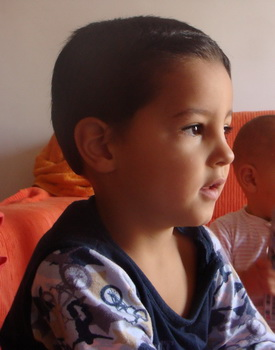

Carlos Gustavo Martín Alonso & María Fabregat Moreno
Carlos Gustavo Martín Alonso & María Fabregat Moreno 
 Pablo Martín Fabregat
Pablo Martín Fabregat
Manuel (Manu) Martín Fabregat
This page is within a frameset. View the entire genealogy report of family Carlos Gustavo Martín Alonso & María Fabregat Moreno, or surname index or report summary.
Family Systems Therapy.
© 2006 GenoPro Inc. All Rights Reserved.